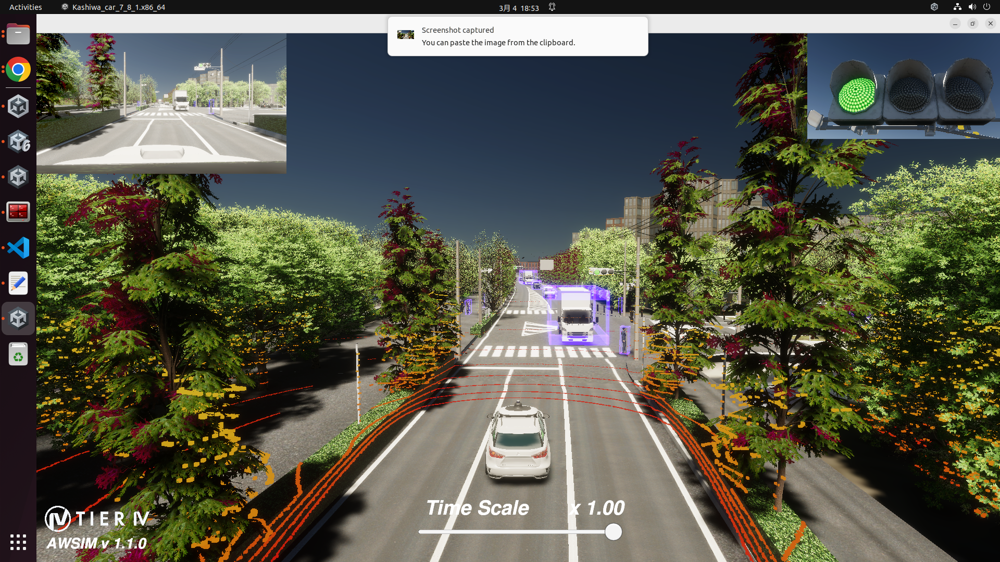
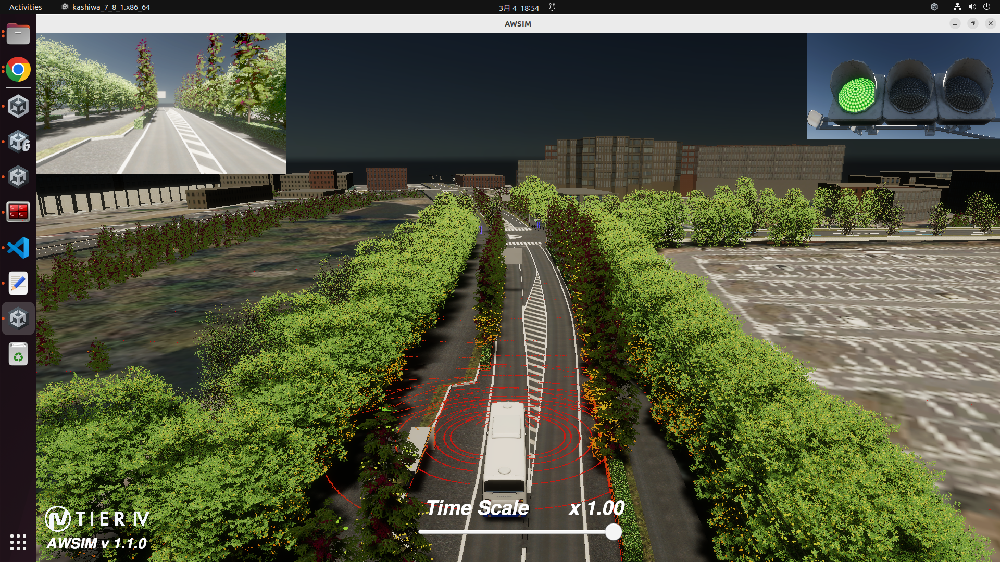
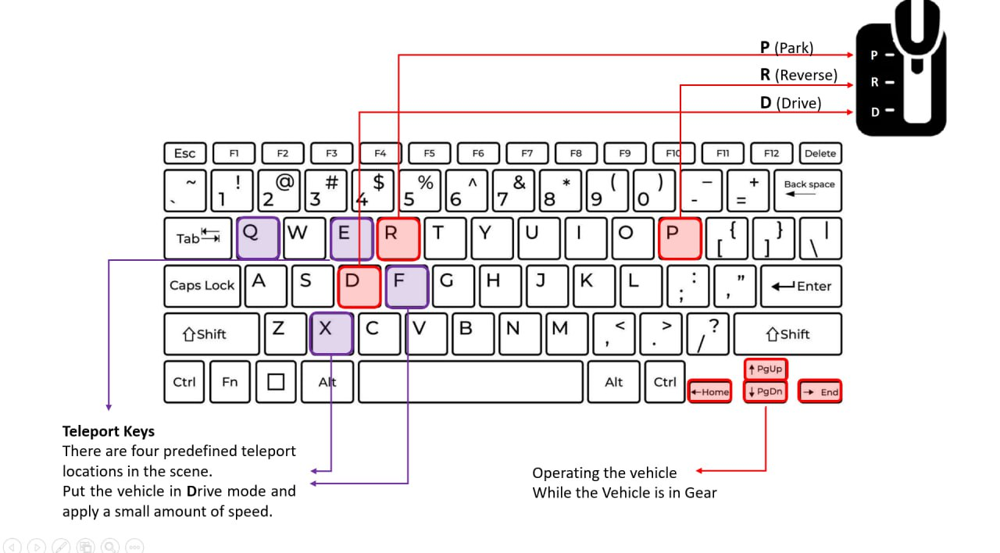
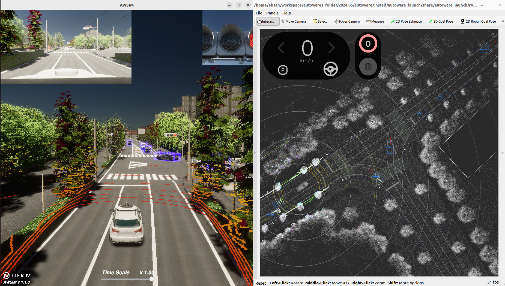
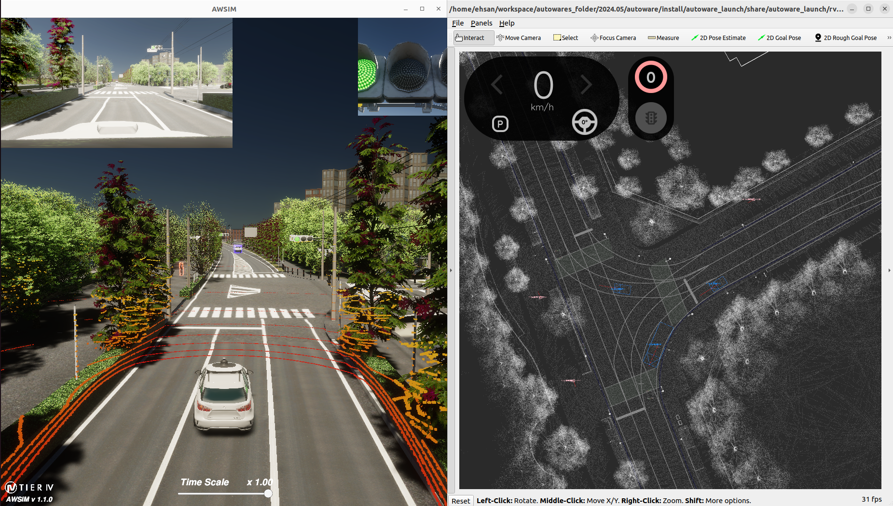

Quick Start Demo
This section provides a quick start tutorial for the V2X_E2E_Simulator on Ubuntu. Most of this documentation is based on the AWSIM documentation.
Demo configuration
Standard Vehicle Configuration
The simulation provided in the V2X_E2E_Simulator demo is configured as follows:
| V2X_E2E_Simulator Demo Settings | Details |
|---|---|
| Vehicle | Lexus RX 450h |
| Environment | Japan, Tokyo (Kashiwa) |
| Sensors | GNSS ×1 IMU ×1 LiDAR ×1 Traffic Camera ×1 |
| Traffic | Configurable via menu |
| ROS2 Version | Humble |
Bus Configuration
An alternative configuration is available for the bus simulation:
| V2X_E2E_Simulator Demo Settings | Details |
|---|---|
| Vehicle | Bus |
| Environment | Japan, Tokyo (Kashiwa) |
| Sensors | GNSS ×1 IMU ×1 LiDAR ×3 Traffic Camera ×1 |
| Traffic | Configurable via menu |
| ROS2 Version | Humble |
Note
In the current version, the Bus and the Lexus are both in the same scene. Choose the ego vehicle at runtime from the vehicle dropdown in the UI (see Vehicle selection).
PC specs
The following system requirements must be met for the simulation to function properly:
| Required PC Specs | |
|---|---|
| OS | Ubuntu 22.04 |
| CPU | 6 cores and 12 thread or higher |
| GPU | RTX2080Ti or higher |
| Nvidia Driver (Windows) | >=472.50 |
| Nvidia Driver (Ubuntu 22) | >=580 |
Localhost settings
The simulation relies on specific network configurations to ensure seamless communication between the V2X_E2E_Simulator and Autoware. To set up the necessary localhost environment, add the following lines to your ~/.bashrc file:
if [ ! -e /tmp/cycloneDDS_configured ]; then
sudo sysctl -w net.core.rmem_max=2147483647
sudo ip link set lo multicast on
touch /tmp/cycloneDDS_configured
fi
and these lines to ~/.profile or in either of files: ~/.bash_profile or ~/.bash_login:
export ROS_LOCALHOST_ONLY=1
export RMW_IMPLEMENTATION=rmw_cyclonedds_cpp
Warning
A system restart is required for these changes to work.
Start the demo
Running the V2X_E2E_Simulator simulation demo
To run the simulator, please follow the steps below.
-
Install Nvidia GPU driver (Skip if already installed).
- Add Nvidia driver to apt repository
sudo add-apt-repository ppa:graphics-drivers/ppa sudo apt update -
Install the recommended version of the driver.
sudo ubuntu-drivers autoinstallWarning
Currently, there are cases where the NVIDIA driver is incompatible, resulting in a segmentation fault. In such cases, please use the 580 version, which we have already tested.
-
Reboot your machine to make the installed driver detected by the system.
sudo reboot - Open terminal and check if
nvidia-smicommand is available and outputs summary similar to the one presented below.$ nvidia-smi Sat Oct 25 17:34:49 2025 +-----------------------------------------------------------------------------+ | NVIDIA-SMI 580.95.05 Driver Version: 580.95.05 CUDA Version: 13.0 | |-------------------------------+----------------------+----------------------+ | GPU Name Persistence-M| Bus-Id Disp.A | Volatile Uncorr. ECC | | Fan Temp Perf Pwr:Usage/Cap| Memory-Usage | GPU-Util Compute M. | | | | MIG M. | |===============================+======================+======================| | 0 NVIDIA GeForce ... Off | 00000000:01:00.0 On | N/A | | 37% 31C P8 30W / 250W | 188MiB / 11264MiB | 3% Default | | | | N/A | +-------------------------------+----------------------+----------------------+ +-----------------------------------------------------------------------------+ | Processes: | | GPU GI CI PID Type Process name GPU Memory | | ID ID Usage | |=============================================================================| | 0 N/A N/A 1151 G /usr/lib/xorg/Xorg 133MiB | | 0 N/A N/A 1470 G /usr/bin/gnome-shell 45MiB | +-----------------------------------------------------------------------------+
- Add Nvidia driver to apt repository
-
Install Vulkan Graphics Library (Skip if already installed).
- Update the environment.
sudo apt update - Install the library.
sudo apt install libvulkan1
- Update the environment.
-
Download and Run V2X_E2E_Simulator Demo binary.
-
Download the desired build (Bus or lexus).
Request the download (Bus / Lexus demo builds)
Note
In the current version, both vehicles are in one scene and you can switch between them at runtime with the vehicle dropdown (see Vehicle selection). A build of the current version therefore contains both vehicles.
-
Unzip the downloaded file.
-
Make the
*.x86_64file executable.Rightclick the
*.x86_64file and check theExecutecheckbox
or execute the command below.
chmod +x <path to V2X folder>/{file_name}.x86_64 -
Launch
*.x86_64../<path to V2X folder>/{file_name}.x86_64Warning
It may take some time for the application to start the so please wait until image similar to the one presented below is visible in your application window.

-
Simulation Environment Images
Lexus Simulation in E2E V2X Simulator

Figure: Lexus vehicle in the simulation environment.
Bus Simulation in E2E V2X Simulator

Figure: Bus vehicle in the simulation environment.
Controlling Features
Without using Autoware, you can manually control the cars to create your desired scenario.
Vehicle selection
- Choose the ego vehicle (Bus or Lexus) from the vehicle dropdown in the UI.
- The selected vehicle is activated and the other one is deactivated. The Bus is active when the simulator starts.
- Keyboard driving, teleport and the speed/gear display always apply to the currently active vehicle.
1. Basic Controls (gear)
- D (Drive) → Press to enable driving mode.
- P (Park) → Press to stop the vehicle.
- R (Reverse) → Press to drive in reverse mode.
- N (Neutral) → Press to shift to neutral.
2. Driving Controls
- After pressing D (Drive), use the arrow keys to move around the city (Up = accelerate, Down = brake, Left/Right = steer).
- Turn signals: 1 = left, 2 = right, 3 = hazard, 4 = off (main keyboard number keys).
- When the vehicle is driven by Autoware, pressing an arrow key takes over control (the control mode switches to manual). The gear you select with the keyboard is kept; it is not reset to the vehicle's previous gear.
3. Teleport Feature
- There are four predefined start points in the scene.
- Use the following keys to teleport the currently active vehicle (Bus or Lexus):
- Q, E, F, X → Teleport to start points 1, 2, 3 and 4.
- Before moving the vehicle, NPC vehicles near the destination are removed (within
clearanceRadius, 15 m in the scene) and the teleport waitsteleportDelay(1 s in the scene).
4. Manual Object Creation
- Use button O to spawn objects in scenarios where this feature is available (
SpawnerOnWaypoint).

Figure: Defualt keys for extra functionalities
RSU Section
You can retrieve RSU (Roadside Unit) data and drive the car without using Autoware.
RSU Data Visualization in Rviz
To visualize RSU data, you need Rviz with support for custom message visualization.
- If you already have an Rviz configuration that supports custom messages, you can use it directly.
- If you do not have the required Rviz configuration, install Autoware and use its default Rviz settings for proper visualization.
RSU Data Visualization in Rviz (Autoware)
The following images illustrate how RSU data appears in Rviz (Autoware):
RSU Data - When the Car is Present

Figure: RSU data visualization when the car is close to the crossroad.
RSU Data - When the Car is Absent

Figure: RSU data visualization when the car is not present at the crossroad.
Topic List
In V2X_E2E_Simulator version 7.8.1, the following topics are published.
Some topics are AWSIM default topics, which you can check in the AWSIM documentation.
1. Objects Sensed by Bus Onboard Perception Sensors
These objects are detected by the Bus pseudo sensor, which consists of a 4-LiDAR setup and more than 10 cameras.
- Published Topic:
/OBU/Sensing
2. Autoware-Compatible Topics
Not published in v3.1.2
The v3.1.2 scene does not publish these topics: their publishers were removed by mistake together with the old object-info setup. They will be back in the next version. Use v3.1.1 if you need them.
These topics are used as direct inputs to Autoware for testing.
The message type PredictedObjects comes from autoware_auto_perception_msgs.msg, which is a default message type of Autoware and AWSIM.
| Topic Name | Intersection |
|---|---|
/v2x/rsu1/predicted_object |
Ganken Intersection |
/v2x/rsu2/predicted_object |
Kakeiken Intersection |
/v2x/rsu3/predicted_object |
Daisan Kidoutai |
/v2x/rsu4/predicted_object |
Wakashiba Intersection |
3. Cool4 DM Format Topics
These topics provide the detected objects in CooL4 DM format (dm_object_info_msgs/ObjectInfoArray). This message is not compatible with Autoware; it was created for the DM protocol.
The RSU sensors are at Ganken (0x12020001), Kakeiken (0x12020002, 0x12020003), the midblock between Kakeiken and Wakashiba (0x12020004) and Wakashiba (0x12020005). All topics are published at 10 Hz.
| Topic Name | Content |
|---|---|
/v2x/object_info |
Objects seen by all RSU sensors, with noise |
/v2x/object_info/DSRC |
The same with DSRC network delay and packet loss |
/v2x/object_info/Cellular |
The same with cellular network delay |
/v2x/object_info_groundtruth |
The same objects without noise |
4. DM Format Topics per Sensor (Intersection #2 in Kashiwa)
Detected objects from each sensor are also published separately (for tracking research, no network delay).
The rsu number and sensor number identify the sensor.
- /object_info → Detected objects with noise
- /object_info_groundtruth → Detected objects without noise
Published Topics:
/v2x/rsu12020002/sensor1/object_info
/v2x/rsu12020002/sensor1/object_info_groundtruth
/v2x/rsu12020002/sensor2/object_info
/v2x/rsu12020002/sensor2/object_info_groundtruth
/v2x/rsu12020002/sensor3/object_info
/v2x/rsu12020002/sensor3/object_info_groundtruth
/v2x/rsu12020002/sensor4/object_info
/v2x/rsu12020002/sensor4/object_info_groundtruth
/v2x/rsu12020002/sensor5/object_info
/v2x/rsu12020002/sensor5/object_info_groundtruth
/v2x/rsu12020003/sensor1/object_info
/v2x/rsu12020003/sensor1/object_info_groundtruth
/v2x/rsu12020003/sensor2/object_info
/v2x/rsu12020003/sensor2/object_info_groundtruth
/v2x/rsu12020003/sensor3/object_info
/v2x/rsu12020003/sensor3/object_info_groundtruth
/v2x/rsu12020003/sensor4/object_info
/v2x/rsu12020003/sensor4/object_info_groundtruth
/v2x/rsu12020003/sensor5/object_info
/v2x/rsu12020003/sensor5/object_info_groundtruth
See DM Protocols → CooL4 → Topic List for details.
5. V2X Traffic Signal Information for Autoware
Not published in v3.1.2
The v3.1.2 scene does not publish these topics: their publishers were removed by mistake together with the old object-info setup. They will be back in the next version. Use v3.1.1 if you need them.
- Published Topic:
/v2x/traffic_signals/v2x/rsu1/traffic_signals/v2x/rsu2/traffic_signals/v2x/rsu3/traffic_signals/v2x/rsu4/traffic_signals
6. CooL4 DM Signal Information
Signal state with remaining time for the five intersections on the bus route, in the CooL4 DM format (dm_signal_info_msgs/SignalInfoArray). Published all the time by the DM Signal Info Publisher prefab.
- Published Topic:
/signal_info(all five intersections in one message)/signal_info/DSRC,/signal_info/Cellular(the same with network delay and packet loss)
See DM Protocols → CooL4 → Signal Info for details.
Scenarios
Select the scenario from the Scenario dropdown in the UI. The number keys are not used for scenario selection (keys 1–4 control the turn signals).
The dropdown entry index is passed to ScenarioSelector.ActivateScenario, which activates that scenario and deactivates all others. On start, ScenarioSelector activates defaultScenarioIndex (set it to -1 to start with no scenario active).
Available Scenarios (Selectable in menu)
| Index | Dropdown entry | Description |
|---|---|---|
| 0 | No traffic | Empty city: no NPC vehicles or humans. |
| 1 | NormalTraffics (default) | City traffic with pedestrians and cyclists. Pedestrians and cyclists are spawned from a JSON file; see Path Spawn Config (JSON). |
Steps to Lunch Autoware
- Download and Extract Map Files
Download themap files (pcd, osm)and unzip them.
Request the download (map files)
-
Ensure Compatibility with Autoware
This version of the E2E V2X Simulator is compatible with Autoware version 2024.05.
Check this link for Autoware 2024.05: Autoware 2024.05 Release. -
Modify Parameters for Bus Autoware
To work with Bus Autoware, you need to modify the vehicle parameters and sensor setup.
By default, the parameters are set for the Lexus, but you need to add the bus configuration separately. -
Download and Configure Bus-Specific Files
In order to work with Bus Autoware, you need to download the bus vehicle parameters and the bus sensor kit setup. -
Bus Vehicle Parameters:
bus_vehicle_description_v3.1.1.zipfrom the download folder -
Bus Sensor Kit:
bus_sensor_kit_v3.1.1.zipfrom the download folder
Place the downloaded files in the following directories:
- autoware/src/vehicle/sample_vehicle_launch/sample_vehicle_description/config
- autoware/src/param/autoware_individual_params/individual_params/config/default/awsim_sensor_kit